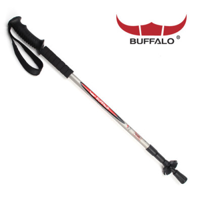

- 도특하고 신기한 등산스틱?
- 압전소자란?
- 제품 설명과 원리
독특하고 신기한 등산스틱!!

다음 제목과 같이 독특하고 신기한 등산스틱을 저희가 만들어 보았습니다.
독특하다? 신기하다? 아직 감이 잘 안오실 텐데요.
만약 여러분들이 등산을
하시면서 전기를 만들어 낼 수 있다면 신기할 것 같지 않으십니까?
만약 그 전기로 폰충전과 등산하는데 필요한 전자제품을 사용하실수 있게 되신다면
독특하지 않으시겠습니까?
저희 회사가 앞서 설명드린것처럼 등산하실때 전기도 만들수 있고 그 만든 전기를 사용가능하게 만들어봤습니다.
이 압전소자라는 것으로요.